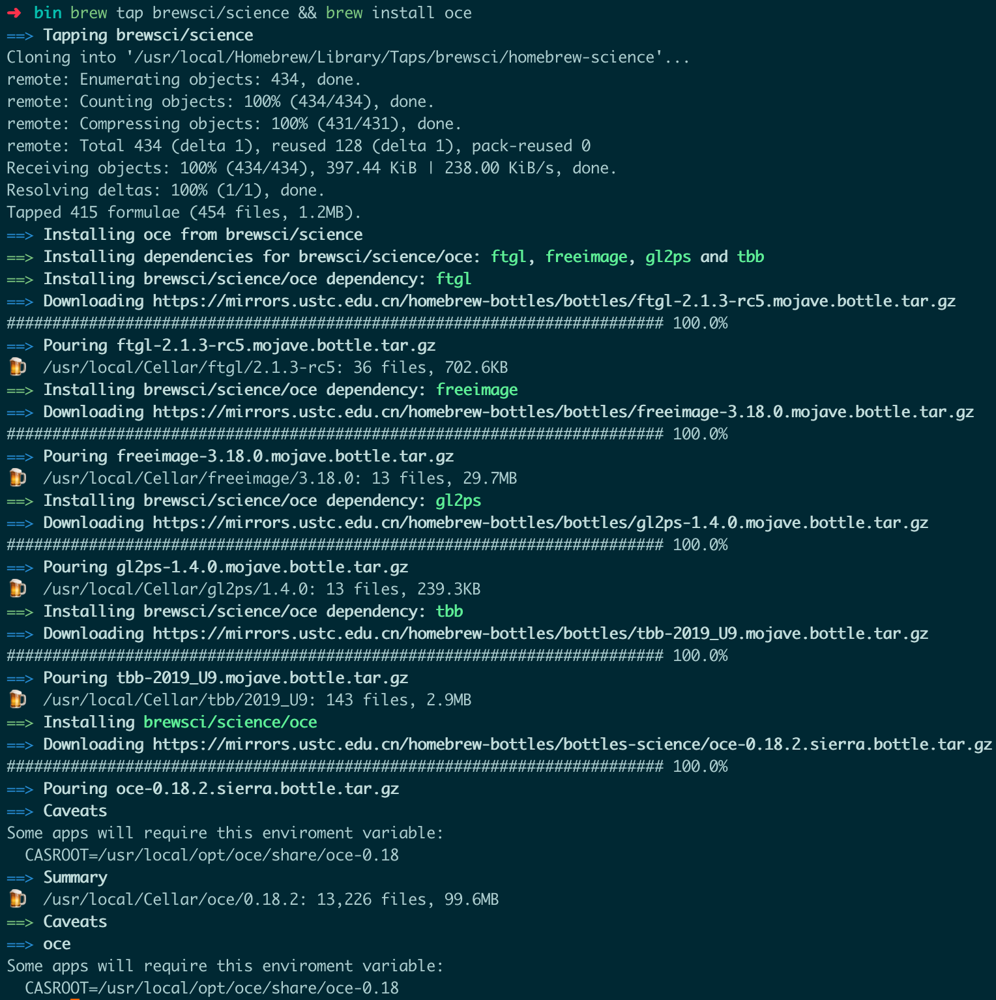
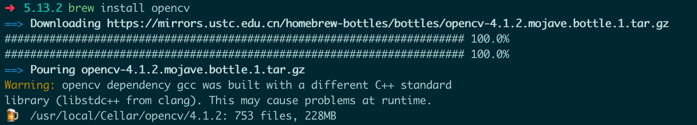

1.qt的安装
安装步骤
命令行执行
1 | brew install qt |
记录执行结果
提示无法找到QtWidgets等时
在环境变量中添加export CMAKE_PREFIX_PATH=/usr/local/opt/qt5/,重启使得环境生效
qt assistant中帮助文档的安装
qt assistant中的帮助文档发现不存在，所以进行安装
qt assistant中的帮助文档不能单独安装，需要下载所有的源码进行安装
- 下载源码
git clone git://code.qt.io/qt/qt5.gitgit checkout v5.14.0perl init-repository - configure生成makefile
cd qt5qt5
2.vtk的安装
安装步骤
- 命令行执行
ruby -e "$(curl -fsSL https://raw.githubusercontent.com/Homebrew/install/master/install)" - 命令行执行
brew install vtk
3.oce（OpenCASCADE）的安装
ref
命令行执行brew tap brewsci/science && brew install oce
执行结果

4.opencv的安装
命令行执行brew install opencv
执行结果

Clion+QT+VTK环+OpenCV环境搭建
注意：
在clion中编译时，不要使用gcc，将编译器设置为系统默认的clang。（由于brew install默认识别系统自带的编译器）
Perferences->Toolchains->System(default) (如果之前修改过，新建一个设置为默认)
clion中cmakelist配置
1 | cmake_minimum_required(VERSION 3.15) |
由于vtk,opencv等会自动调用qt，不对qt进行单独测试
测试文件:（opencv）：
1 |
|
测试文件（vtk）：
1 | /*========================================================================= |
测试文件（oce/opencascade）
1 |
卸载
通过cmake安装的软件要通过如下方式进行卸载：cat install_manifest.txt | sudo xargs rm